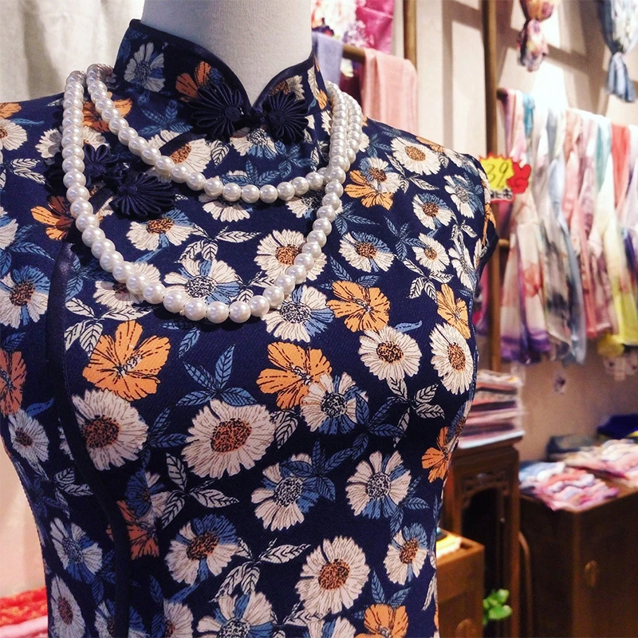
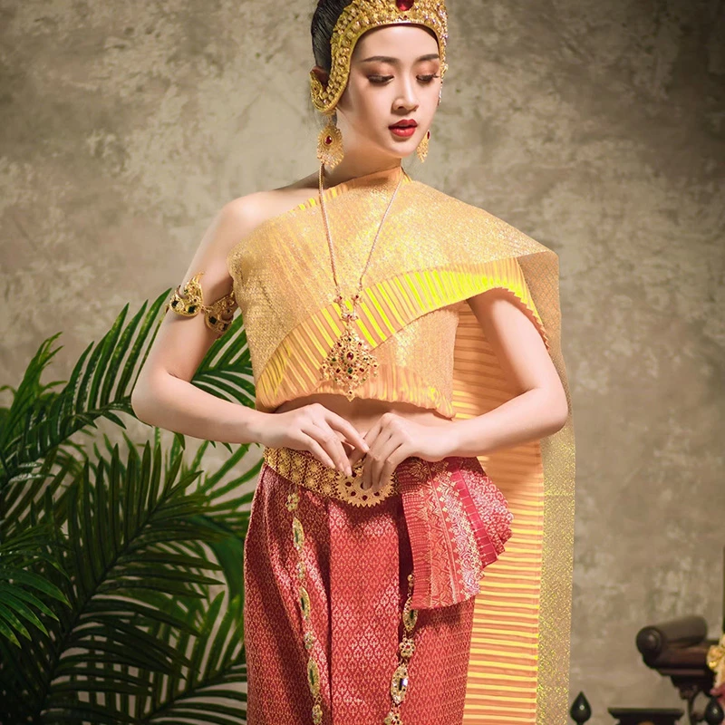
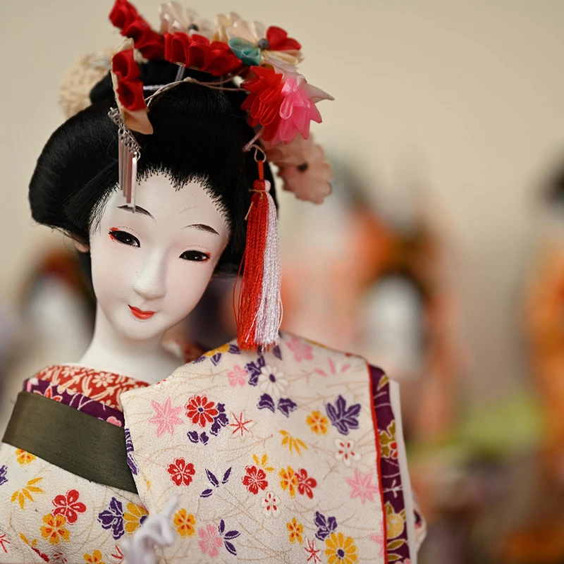
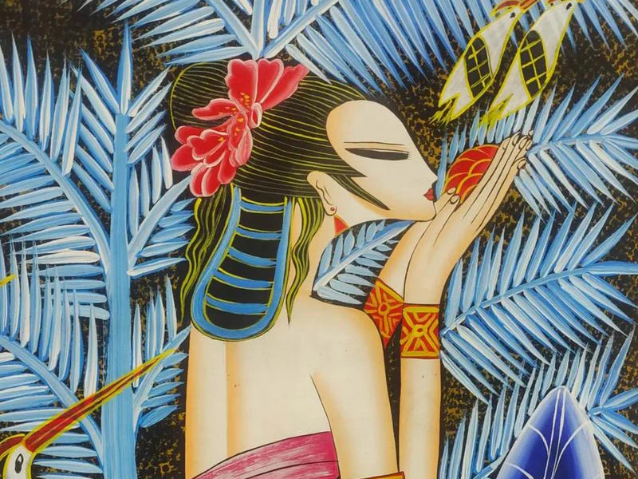
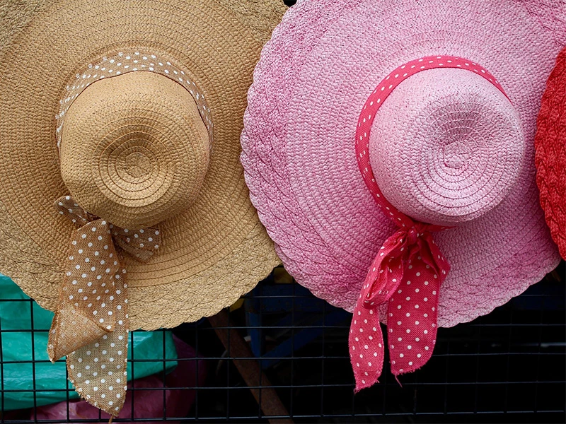
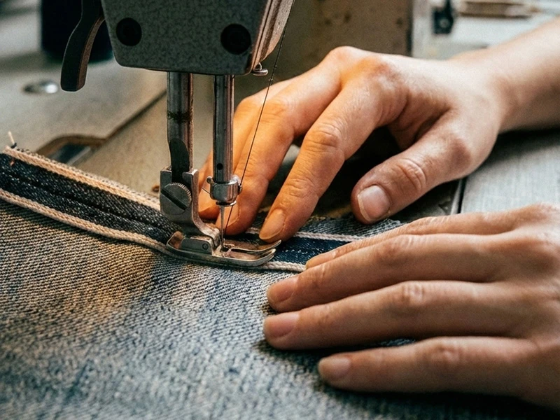

中華傳統文化風格
五千年傳承演進，古雅含蓄、對稱和諧、意境深遠、典雅莊重。

日本傳統文化風格
東瀛文化，簡約留白、侘寂之美、自然含蓄、靜謐雅致。

東南亞傳統文化風格
東南亞文化，色彩濃烈、自然熱帶、紋樣繁複、神秘奔放。

中華傳統服飾文化
設計風格上展現深厚歷史積澱與哲學思維之融合，強調中和對稱與層次秩序，體現天人合一之觀念。圖像語彙多取龍鳳、祥雲、山水與花鳥，寓意吉祥與倫理文化；色彩講究五行象徵與禮制規範，形成典雅莊重之氣質。材質與工藝並重，融合書法線條與裝飾紋樣。當代設計宜透過簡化結構與數位轉譯，深化文化辨識與藝術敘事。

東南亞傳統服飾文化
設計風格方面呈現出多元族群交融與自然信仰並存之特色。其視覺語彙常以熱帶植物、神話圖騰與宗教象徵為核心，色彩濃豔奔放，構圖富節奏與律動感。材質運用則是更偏重手工織染與天然纖維，特別強調質地的層次與工藝上溫度。整體風格兼具原始生命力與儀式美學，當代創作可融入簡約結構與永續理念，提升國際辨識度與設計深度。

日本傳統服飾文化
設計風格上展現克制與秩序之美，特別重視留白、比例與材質的本質呈現，體現侘寂與物哀之精神深沉內涵。造型講求線條純粹與結構平衡，色彩多偏低彩度與自然調性，營造沉靜氛圍。工藝層面強調細節與職人精神，追求極致的完成度。當代設計常融合極簡思維與科技材質，使傳統美學在全球語境中展現內斂而深遠之影響力。
視覺印象 品牌美學風韻意象
視覺風格意象圖，是服飾品牌設計的靈感序章。它將縹緲的東方意境、復古肌理幻化為可視畫面，讓朦朧的美學具象。
並且以此幫助設計師錨定風格脈絡，把抽象的文藝情愫，拆解為可觸摸的產品、色彩與配件，讓設計落筆便自帶詩意風骨。

系列設計 風格語彙分章而立
服飾各系列商品的設計，是為世間百態裁製的美學詩行。
以迥異廓形、色調與肌理，呼應都市通勤的幹練、日常閒逸的鬆弛、雅趣社交的溫婉，精准契合不同消費者的身份、心境與生活訴求。讓穿搭成為自我表達，以專屬美學適配多元需求。

終身守護 匠心維護品質永續
終身售後服務，是品牌贈予產品與穿著者的溫柔契約。
它不止是細緻的養護與修繕，更是賣方對產品品質作出的恒久保證。讓每一件產品皆能相伴歲月，讓消費者於朝夕穿搭間，感受這份跨越時光的篤定與安心，亦是品牌初心與誠意的溫柔兌現。
